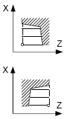
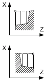

Parameter G-Code Programm | | Parameter ShopTurn-Programm |
|---|
PL | Bearbeitungsebene | | | T | Werkzeugname | |
SC | Sicherheitsabstand | mm | D | Schneidennummer | |
F | Vorschub | * | F | Vorschub | mm/U |
| | | | S / V  | Spindeldrehzahl oder konstante Schnittgeschwindigkeit | U/min
m/min |
Parameter | Beschreibung | Einheit |
|---|
Bearbeitung | ∇ (Schruppen) ∇∇∇ (Schlichten)
| |
Lage | Lage der Bearbeitung:     | |
Bearbeitungs-
richtung | Abspanrichtung (plan oder längs) im Koordinatensystem | |
parallel zur Z-Achse (längs) | Parallel zur X-Achse (plan) | |
außen  | innen  | außen  | innen  | |
X0 | Bezugspunkt in X ∅ (abs, immer Durchmesser) | mm |
Z0 | Bezugspunkt in Z (abs) | mm |
X1 | Endpunkt X (abs) oder Endpunkt X bezogen auf X0 (ink) | |
Z1 | Endpunkt Z (abs) oder Endpunkt Z bezogen auf Z0 (ink) | |
D | Maximale Tiefenzustellung – (nicht bei Schlichten) | mm |
UX | Schlichtaufmaß in X– (nicht bei Schlichten) | mm |
UZ | Schlichtaufmaß in Z– (nicht bei Schlichten) | mm |
FS1...FS3 oder R1...R3 | Fasenbreite (FS1...FS3) oder Verrundungsradius (R1...R3) - (nicht bei
Abspanen 1) | mm |
| | Parameterauswahl Zwischenpunkt Der Zwischenpunkt kann durch Positionsangabe oder Winkel bestimmt werden. Folgende Kombinationen sind möglich - (nicht bei Abspanen 1 und 2) XM ZM XM α1 XM α2 α1 ZM α2 ZM α1 α2
| |
XM | Zwischenpunkt X ∅ (abs) oder Zwischenpunkt X bezogen auf X0 (ink) | mm |
ZM | Zwischenpunkt Z (abs oder ink) | mm |
α1 | Winkel der 1. Kante | Grad |
α2 | Winkel der 2. Kante | Grad |
* Einheit des Vorschubes wie vor Zyklusaufruf programmiert
Siehe auch:
Funktion - CYCLE951
Werkzeug, Korrekturwert, Vorschub und Spindeldrehzahl (T, D, F, S, V)
Bearbeitungsebene, Fräsrichtung, Rückzugsebene, Sicherheitsabstand und Vorschub (PL, RP, SC, F)